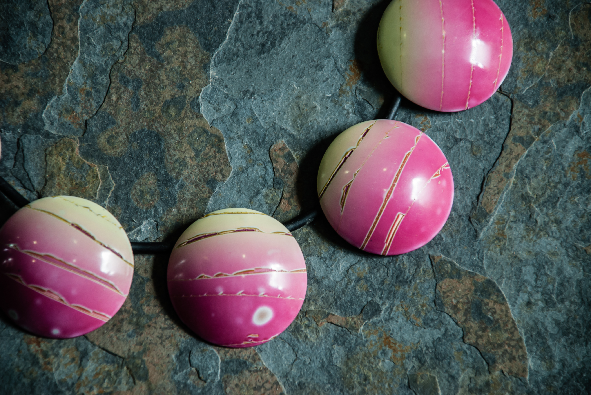
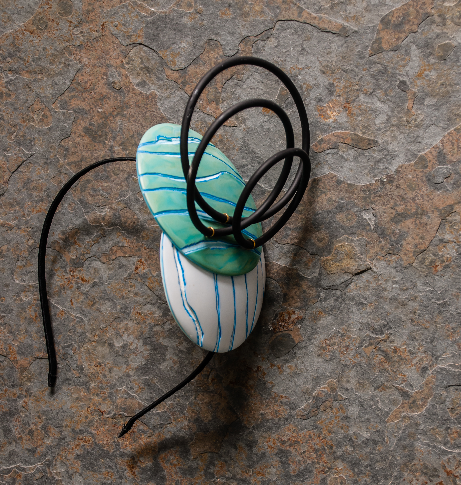
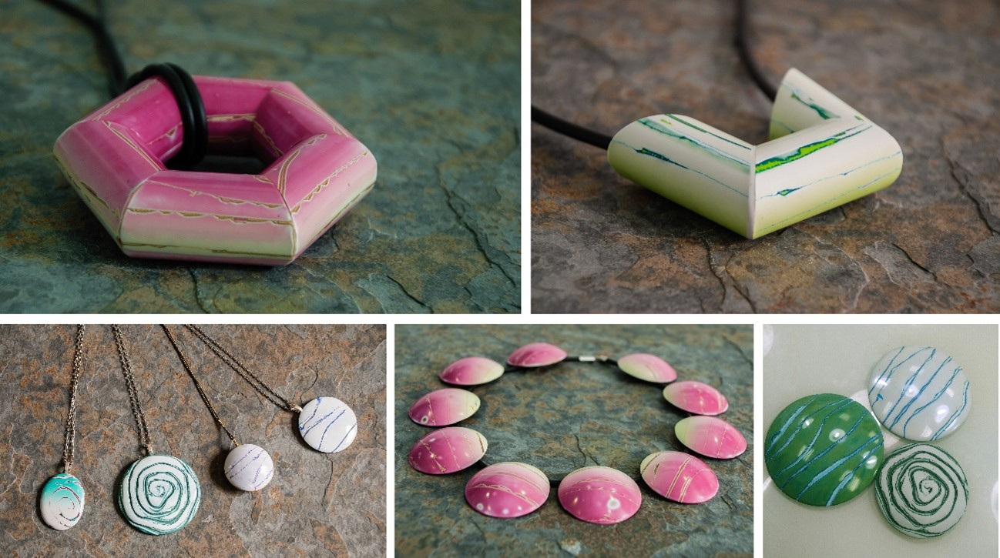

Listado de cursos - Santiago de Chile
- Transparencias 2.0
- Líneas en la arena
- Nebulae
Tranparencias 2.0
3 de diciembre

Todos los niveles son bienvenidos
En este taller nos adentraremos en la magia de la transparencia, explorando cómo el color puede sugerir lo
que se esconde detrás a través de delicadas superposiciones.

Tomaremos como punto de partida la belleza de las flores para transformarla en un lenguaje más
contemporáneo, donde las formas se simplifican y el color se convierte en protagonista.
A lo largo de la experiencia aprenderás a encontrar mezclas equilibradas, a jugar con la intensidad y la
sutileza, y a aplicar texturas que aporten matices y profundidad a cada pieza. Trabajaremos con dos colores
para descubrir cómo dialogan entre sí y cómo generan nuevas sensaciones al superponerse.

Es un curso muy práctico y guiado, pensado para que disfrutes del proceso mientras desarrollas tu propia
interpretación de la transparencia con confianza y sensibilidad.
La duración de este taller es de 7 horas aproximadamente.

Líneas en la arena
4 de diciembre

Todos los niveles son bienvenidos
¿Quién no se ha quedado alguna vez hipnotizado observando las líneas que el mar dibuja en la arena? Esos
gestos repetitivos, orgánicos, casi intuitivos serán el punto de partida de este taller.
Trabajaremos desde la técnica para aprender a crear nuestras propias piezas, utilizando un material tan
cotidiano como el hilo para generar texturas y dibujos que recuerdan a esos trazos efímeros. A través de
este proceso, conseguiremos resultados muy orgánicos, casi como si estuviéramos dibujando directamente sobre
la superficie.

Nos centraremos en la creación de piezas base que darán forma a un collar y unos pendientes, mientras
exploramos la teoría del color para desarrollar nuestra propia paleta y aplicarla en capas sutiles.
Además, compartiré contigo nuevas formas y volúmenes en los que llevo tiempo investigando: propuestas
sencillas, accesibles, pero con un gran potencial expresivo.
Será un espacio para experimentar, entender el material y dejar que el gesto guíe el resultado.
Este taller puede impartirse en una clase de 7 horas.

Nebulae
5 de diciembre

Todos los niveles son bienvenidos
Las nebulosas son regiones del espacio interestelar formadas por elementos químicos gaseosos y en forma
de polvo cósmico.
En este taller exploraremos mi técnica personal, “Nebulae”, centrada en la investigación del color, la
textura y el craquelado como herramientas expresivas. A través de la mezcla de pigmentos y su combinación en
función de las emociones que queramos transmitir, nos adentraremos en una práctica viva de la teoría del
color.
Trabajaremos con arcillas metálicas y otros materiales para experimentar con acabados, superficies y
efectos, poniendo especial atención en la armonía cromática y las posibilidades del craquelado. El proceso
creativo será abierto, fomentando la creación de piezas de forma libre que permitan desarrollar un lenguaje
propio.

Además, incorporaremos una técnica de generación de formas a partir de papel y lápiz, que servirá como punto
de partida para diseñar composiciones originales y potenciar la creatividad.
Exploraremos conceptos clave como el equilibrio visual, el movimiento en la composición y la relación entre
forma, color y textura, siempre desde una perspectiva práctica y experimental.

Este taller puede impartirse en una clase de 7 horas.